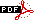

TOC file made by IndexMaker 6.6
HTML files
Simple Magic Square checker and gif maker
IndexMaker
written by Fabrizio Pivari
PGPHTML: to make PGP signed web-page
written by Fabrizio Pivari
PDFprint
written by Fabrizio Pivari
Math::MagicSquare: a PERL module to help you to check your Squar
written by Fabrizio Pivari
Collection of strange Magic Squares
written by Fabrizio Pivari
Lo-Shu Magic Square
written by Fabrizio Pivari
WHCCC
written by Fabrizio Pivari
Virtual holey coins and tokens gallery
written by Fabrizio Pivari
Worldwide information on holey coins and tokens
written by Fabrizio Pivari
My list of Holey Coins and Tokens
written by Fabrizio Pivari
PDF files
Magic Cross
written by Fabrizio Pivari 